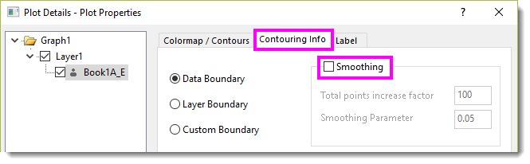

FAQ-1225 Warum lässt mein Projekt mit Konturdiagrammen Origin abstürzen?
Smooth-Contour-Freeze
Letztes Update: 28.08.2025
Wenn Sie merken, dass das Konturdiagramm sehr langsam ist oder Origin sogar zum Abstürzen bringt, kann dies an der übermäßigen Anzahl von Datenpunkten in der Kontur liegen.
Um dieses Problem zu beheben:
- Ändern Sie die Systemvariable @TCS in 4000. Lesen Sie diese FAQ, um zu erfahren, wie Sie den Wert ändern.
@TCS steuert den Schwellenwert für die Anzahl von Datenpunkten, die den Entwurfsmodus auslösen. Der Standardwert liegt seit Origin 2022 bei 10.000. Das Reduzieren dieses Werts, zum Beispiel auf 4000, kann Origin beschleunigen.
- Schalten Sie das Glätten der Kontur aus. Das heißt:
- Klicken Sie zum Öffnen des Dialogs Details Zeichnung doppelt auf die Kontur.
- Gehen Sie zur Registerkarte Kontur-Info und deaktivieren Sie die Option Glätten.

Schlüsselwörter:Kontur, Öffnen fehlgeschlagen, abgestürzt, abstürzen, kann sich nicht bewegen, lädt langsam, keine Antwort